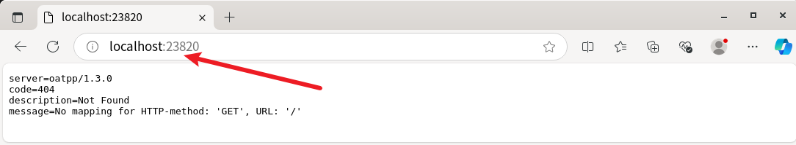

Infinity
官网：AI-native database for LLM | Infinity
GitHub：AI-native database for LLM | Infinity
来自官方：The AI-native database built for LLM applications, providing incredibly fast hybrid search of dense vector, sparse vector, tensor (multi-vector), and full-text
翻译：为LLM应用程序构建的AI原生数据库，提供密集向量、稀疏向量、张量（多向量）和全文的快速混合搜索
Ubuntu 22.04
该章节记录一下
下载
下载地址：Releases · infiniflow/infinity。
安装和检查
sudo dpkg -i infinity-0.5.0.dev5-x86_64.deb

启动
# 查看服务状态
sudo systemctl status infinity
# 备用
sudo systemctl start infinity
sudo systemctl stop infinity
sudo systemctl restart infinity
sudo systemctl enable infinity
下面是启动的配置文件截图
如果你想修改配置文件，你需要先修改文件权限。修改之后记得重启一下服务
# 修改为可写
sudo chmod 777 /usr/etc/infinity_conf.toml
# 修改为只读
sudo chmod a-w /usr/etc/infinity_conf.toml
启动成功之后，看一下访问
